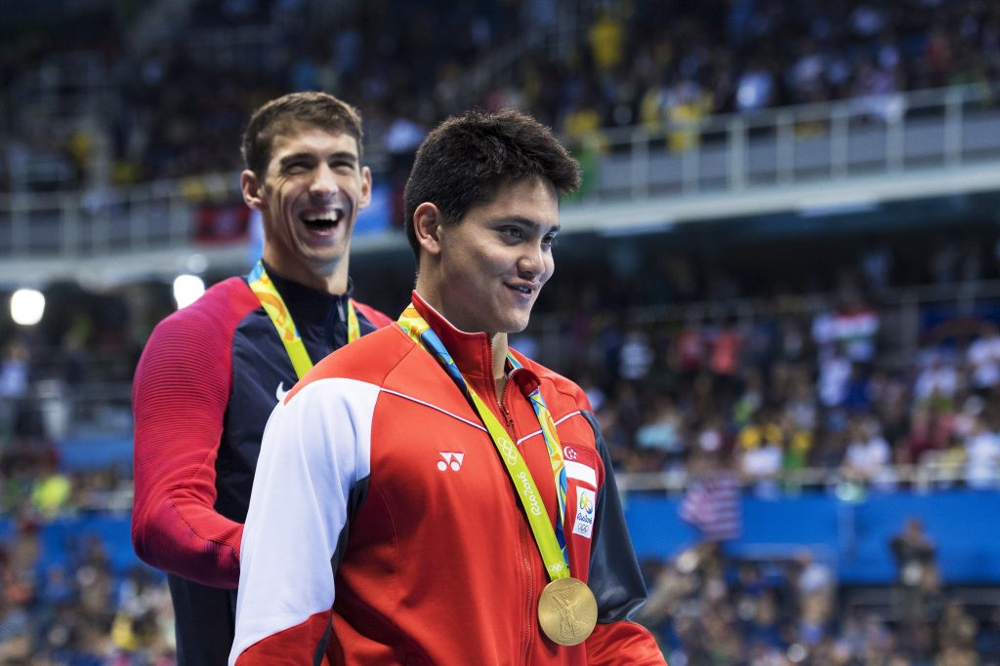

Joseph Schooling. Lekcja dorastania mistrza olimpijskiego.
14.01.2020 | 18:22:37 | Karol Pierzyński
Świat poznał go jako złotego chłopca, który pokonał Michaela Phelpsa w jego ostatnim indywidualnym starcie w karierze. Teraz jest mężczyżną, który wciąż mieszka z rodzicami. Od złotego medalu Josepha Schoolinga minął szmat czasu, a wielka forma z igrzysk w Rio pozostała tylko wspomnieniem. Jak 24-letni Singapurczyk odnajduje się w nowej rzeczywistości, w której nie jest już nowicjuszem, studentem, chłopcem?
Rok 2008, Singapur. Igrzyska olimpijskie za pasem. Kadra amerykańskich pływaków pieczołowicie szlifuje formę na imprezę docelową. Najlepszy z nich, który – jeszcze tego nie wiedząc, już wkrótce będzie na ustach całego świata, przechadza się po ośrodku treningowym. Nagle zaczepiają go piski i krzyki dzieci: Michael Phelps, Michael Phelps! To wtedy Joseph Schooling zobaczył swojego idola po raz pierwszy. Przerwał pisanie pracy domowej i szybko ustawił się w kolejce do zdjęcia. Zdjęcia, które osiem lat później obiegnie całe social media. Młody chłopiec z Singapuru miał na sobie niebiesko-białą koszulę, prostokątne okulary, a na twarzy wymazany nieśmiały uśmiech. Zdecydowanie nie wyglądał na przyszłego mistrza olimpijskiego, ale pozory bywają złudne. Talent w końcu nigdy nie jest wypisany w spojrzeniu, czy w stylu ubierania. To samo dotyczy ciężkiej pracy, która przeważnie skrywa się w słabo oświetlonych siłowniach, salach gimnastycznych, a w tym wypadku na basenach. Ten sam niepozorny chłopczyk narzucił sobie katorżniczą systematyczność i dyscyplinę. Kiedy miał osiem lat obudził pogrążonego w głębokim śnie ojca. Była 4:30:
Muszę iść na trening.
I choć brzmi to nieprawdopodobnie, według Colina Schoolinga tak właśnie to wyglądało. Jego syn zawsze wstawał przed świtem, a potem zjawiał się na basenie i przepływał kolejne kilometry. Cel? Chciał zostać olimpijczykiem. Tak jak jego dziadek wujeczny. Llyod Valberg to pierwszy w historii Singapurczyk, który wziął udział w letnich igrzyskach. Przed młodym pływakiem daleka droga, ale przynajmniej w jasnym kierunku.
Singapur to nieco ponad 5-milionowe państwo położone na Półwyspie Malajskim. W przeciwieństwie do chociażby, jeszcze mniej licznej Słowenii, nigdy nie słynęło z produkowania wysokiej klasy sportowców. Przed Josephem Schoolingiem Singapurczycy nie mieli swojego Anze Kopitara, Jana Oblaka, czy Luki Doncica. Ikony, światowego ambasadora, który wprowadziłby swój kraj na sportową mapę świata.
Ktoś taki był po prostu potrzebny.
No, ale stworzenie medalisty olimpijskiego w systemie szkoleniowym w Singapurze nie było możliwe. Dlatego w 2009 roku, mając zaledwie 14 lat, Schooling przeprowadził się do mekki światowego pływania. W USA został uczniem szkoły Bolles School na Florydzie. W kolejnym zaś roku rozpoczął treningi pod przewodnictwem przyszłego trenera reprezentacji Singapuru, Sergio Lopeza Miro.
– Sergio stał się dla mnie kimś w rodzaju drugiego ojca. Zbudowaliśmy ze sobą bardzo mocną więź. Jesteśmy w stanie dyskutować na każdy temat i zawsze mówić to co siedzi nam w głowie – mówił w rozmowie ze Strait Times w 2012 roku.
Nienawidził nowego środowiska. Kiedy jako czternastolatek znajdujesz się nagle na innym kontynencie, otoczony obcą kulturą, trudno nie czuć się nieswojo. Został rzucony na głęboką wodę, ale z własnej woli. Taka sytuacja zmusiła go do szybkiego dorastania. Schooling, który jeszcze rok wcześniej stawał zawstydzony do słynnego zdjęcia, szybko przestał być dzieckiem. Zresztą rzekomo już wtedy osiągnął wzrost zbliżony do swojego obecnego, czyli 182 cm.
Rodzice wiedzieli o wszystkim, a matka powtarzała przez telefon: jeśli chcesz, możesz wrócić. Schooling nie chciał o tym słyszeć. Owszem, zdarzało mu się nawet płakać po nocach, ale to nie było istotne. Nie zamierzał zejść z obranej ścieżki. Singapurczyk przebrnął przez pierwsze ciężkie miesiące, a przy okazji nauczył się robić pranie i wykonywać wszystkie inne czynności domowe, z którymi wcześniej nie miał styczności.
– Życie zawsze daje ci wybór. Mógłbym rzucić szkołę, albo zostać woźnym. Mógłbym uczyć się 24 godziny na dobę. Nie musiałem zostać pływakiem – mówił w rozmowie ze Strait Times.
A jeśli chodzi o sport, wszystko szło jak po sznurku. W 2011 roku razem ze swoją sztafetą 4×100 m stylem zmiennym, pobił rekord Stanów Zjednoczonych w grupie wiekowej 15-16 lat. I to o niemal sześć sekund! Niestety, to osiągnięcie nie mogło zostać uznane, ponieważ Schooling jako jedyny w grupie nie posiadał amerykańskiego obywatelstwa. Nieco później Singapurczyk ustanowił trzy rekordy swojego kraju: na 100 i 200 metrów delfinem (54.19, 2:00.05) oraz na 200 metrów zmiennym (2:05.07). Potem jeszcze je śrubował, aż przyszły igrzyska olimpijskie w Londynie.
Debiut rządzi się własnymi prawami. Szczególnie kiedy masz zaledwie 17 lat.
Tuż przed startem na dystansie 200 m delfinem okazało się, że jego czepek i okulary nie spełniają olimpijskich norm. Po wymianie akcesoriów został dopuszczony do startu, ale nawet mała wpadka w sytuacjach dużego napięcia, może odbić się na pewności siebie. Stres i trema sparaliżowały młodego Singapurczyka tak mocno, że zakończył olimpijską przygodę już na eliminacjach. Nieudany występ niemal przemilczał, bo:
Mistrzowie nie robią wymówek.
Mimo młodego wieku oczekiwania miał znacznie większe. Liczył przynajmniej na półfinał, a jego trener przed igrzyskami w rozmowie ze Strait Times zapewniał: – Możecie zostać zaskoczeni. Jeśli podejdzie do tego w odpowiedni sposób, będzie pływał bardzo dobrze. Chciałbym żeby rozumiał, że tam jest jego miejsce. Na igrzyskach. Należy do elity. – Ale skończyło się na sporym rozczarowaniu, co odbiło się na psychice nastolatka. Przez kolejne sześć miesięcy mierzył się z ciągłymi wahaniami motywacji. Bywały dni kiedy zwyczajnie chciał od wszystkiego uciec.
Pomogli ludzie. I krok po kroku, młody Singapurczyk zaczął wzbijać się coraz wyżej, a lista sukcesów rosła i rosła. Srebrny medal na Igrzyskach Wspólnoty Narodów, brąz na mistrzostwach świata w Kazaniu, złoto na mistrzostwach Azji (pierwsze dla Singapuru od ponad 30 lat). Do tego niezliczone rekordy życiowe, a przy tym, oczywiście, nowe rekordy kraju.
Schooling pukał do drzwi absolutnej czołówki światowego pływania, a na dwa miesiące przed Rio wyważył drzwi. W zawodach Austin Elite Invite pokonał Phelpsa, wygrywając wyścig na 100 metrów motylkiem z czasem 51.58 (o 0.07 lepszym od Amerykanina). To był jeden z finalnych testów przed igrzyskami 2o16 roku i stało się jasne, że Schooling jest gotowy, aby zapisać się na kartach historii.
Przed finałem setki delfinem, Michael Phelps miał za sobą już cztery wygrane wyścigi. A przed sobą ostatni indywidualny start w karierze. Kto mógł zatrzymać najlepszego olimpijczyka w historii? Ten, który czekał na ten moment całe życie. Od ich pierwszego spotkania minęło osiem lat.
Przepraszam jeśli nie widać po mnie wielkich emocji. Ja to właśnie zrobiłem? Czy wciąż przygotowuję się do wyścigu? Nie wiem, w którą wersję uwierzyć.
W momencie ukończenia ostatniego etapu edukacji, umiera twoja pierwsza młodość. Pozostają tylko wspomnienia i dyplom, a w przypadku Josepha Schoolinga tytuł magistra ekonomii. To wszystko uzupełnił również masą wyróżnień sportowych.
Rok 2018, Singapur. Zdążył przyzwyczaić się do akademickiego stylu życia. Nawet po igrzyskach olimpijskich w Rio, mógł wrócić do kampusu i nieco odizolować się od całego szumu. Ameryka to kraina ludzi sukcesów. I jakby źle to nie brzmiało, nawet będąc mistrzem olimpijskim, wciąż jest się jednym z wielu.
W kulturze azjatyckiej mieszkanie z rodzicami do pewnego wieku uchodzi za normę. Moment na przeprowadzkę? Dopiero kiedy znajdziesz wybrankę serca. I tak złoty medalista olimpijski po niemal dziesięciu latach pobytu w Stanach Zjednoczonych i ukończeniu dwóch szkół, wrócił do rodzinnego domu. Rzeczywistość w Singapurze jednak wygląda zupełnie inaczej. Schooling nie ma ani chwili wytchnienia. Gdziekolwiek pójdzie, nie może być mowy o anonimowości. Rozmawiamy w końcu o pierwszym złotym medaliście olimpijskim w historii tego kraju.
Koniec kariery jako uczelniany pływak (startujący w zawodach w ramach NCAA, które nie zezwala studentom na zarabianie na swojej osobie) miał również plusy. Przede wszystkim, jeden z najbardziej rozpoznawalnych przedstawicieli dyscypliny, mógł wreszcie zacząć czerpać pełne korzyści z popularności, jaką sobie wypracował. Zaangażował się w wiele kampanii reklamowych, podpisując umowy z Hugo Bossem, Nestle, Tag Hauer czy DBS Bank.
Ostatnie mistrzostwa świata były porażką. Po raz pierwszy od 2013 roku wrócił z imprezy tej rangi bez żadnego medalu. Ba, to nie oddaje w pełni skali niepowodzenia. W konkurencji, w której trzy lata temu nie miał sobie równych, tym razem nie zdołał nawet wejść do półfinału. Czas 52.93 sekundy uplasował go na 24. miejscu spośród wszystkich startujących. To o ponad dwie sekundy gorszy rezultat od rekordu olimpijskiego.
Pływanie stale idzie do przodu, a poziom jaki prezentują niektórzy zawodnicy jest wprost kosmiczny. W tym roku pobite zostały dwa rekordy, które wydawały się nieosiągalne. W konkurencji 100 m delfinem (czyli również tej, w której specjalizuje się Schooling) Caeleb Dressell osiągnął czas 49.50. Dwa dni wcześniej natomiast najlepszy wynik w historii na dwukrotnie dłuższym dystansie ustanowił 19-letni Kristof Milak. Oba rekordy należały wcześniej do Phelpsa.
Dressell pobił zresztą nie tylko rekord świata, ale z mistrzostw świata w Korei Południowej przywiózł aż sześć złotych medali. Nikt nie ma wątpliwości co do tego, że mamy do czynienia z nowym królem pływania. Nawet jeśli Schooling zdoła odzyskać formę sprzed trzech lat, wciąż nie będzie mógł być uważany za faworyta.
Złoty chłopiec nie jest już chłopcem, tylko doświadczonym pływakiem. W wieku 24 lat powinien znajdować się w szczycie kariery, a jednak stoi na zakręcie. Jednego jak zwykle nie można mu odmówić, determinacji: – To coś w rodzaju pobudki, zderzenia z rzeczywistością. Muszę wrócić do domu i spróbować naprawić, to co nie działało wystarczająco dobrze. Wrócę jako nowy pływak – mówił po mistrzostwach świata.
Nie bez przyczyny mówi się, że trudniej jest powtórzyć sukces, niż dokonać czegoś po raz pierwszy. Czas na kolejny etap dorastania. Od dziecka, do chłopca. Od chłopca, do mężczyzny. Joseph Schooling w ojczyźnie nie musi już nic. Ale aby stać się kimś więcej niż człowiekiem, który pokonał Phelpsa, potrzebuje stawić czoła kolejnemu amerykańskiemu gigantowi.